Molecules, radiation, and climate
Week 1 — Environmental balances and atmosphere
About this lecture
In 1896 the Swedish chemist Svante Arrhenius in Stockholm did long calculations by hand on one question: how would Earth’s temperature change if the amount of carbon dioxide in the air changed? He estimated several degrees of warming for a doubling.
Air is about 99% nitrogen and oxygen. CO₂ is only a few hundredths of a percent. How can such a small amount matter?
Today you will learn to:
- explain why CO₂ and H₂O absorb infrared while N₂ and O₂ do not;
- read a transmission spectrum and compute absorbed power for one band;
- tell lifetime, half-life and climate response apart;
- explain why particles can cool or warm.
Last lecture: sulfate in rain. Today: sulfate, and gases, in the light.
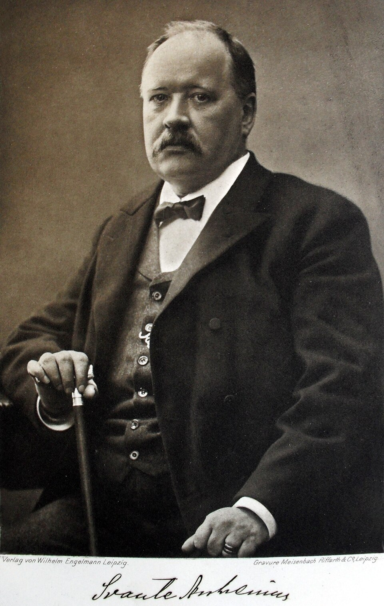
Svante Arrhenius (1859–1927), Nobel Prize in Chemistry 1903. Photogravure, public domain, Wikimedia Commons.Two kinds of light
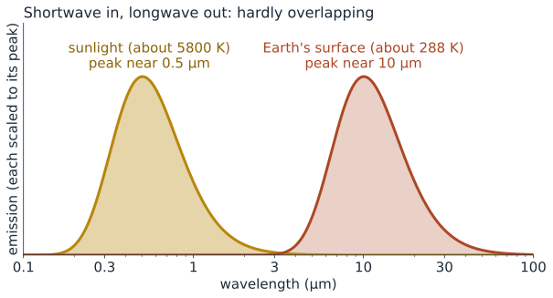
The Sun’s surface is about 5800 K; it emits mostly visible and near-infrared light. Earth’s surface, about 288 K, emits thermal infrared peaking near 10 µm. The two ranges hardly overlap, so a gas can be transparent to sunlight but absorb Earth’s heat.
How the atmosphere intercepts outgoing heat
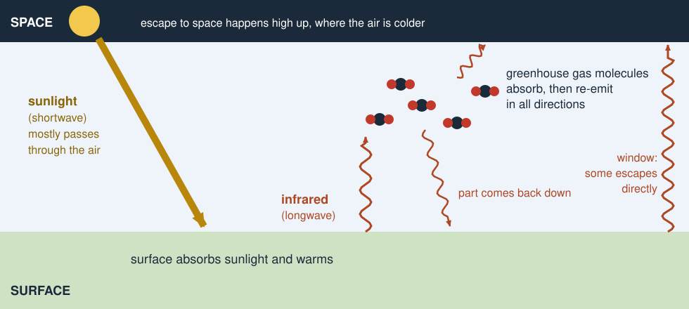
Sunlight warms the surface. The surface emits infrared. Greenhouse gases absorb part of it and re-emit in all directions, some back down. Energy finally escapes from higher, colder layers, which emit less. More absorber raises that escape level, and the surface warms.
Why N₂ and O₂ do not absorb, but CO₂ does
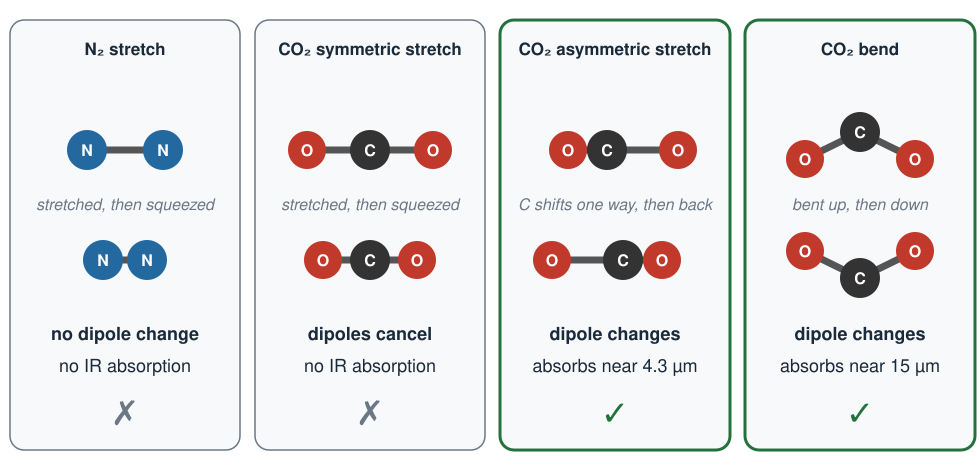
A vibration absorbs infrared only if it changes the molecule’s dipole moment. N₂ and O₂ stay symmetric when they stretch. CO₂ has no dipole at rest, but its asymmetric stretch and bend create one while they vibrate.
Where each gas absorbs
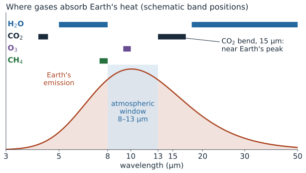
The CO₂ bend at about 15 µm sits close to the peak of Earth’s emission. Water vapour absorbs widely. Between about 8 and 13 µm little absorbs: the atmospheric window. A gas absorbing in the window has more effect than one absorbing where others already do.
Reading a simple spectrum
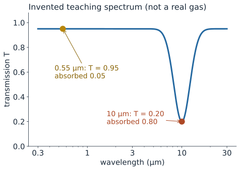
A transmission spectrum shows the fraction T of light that passes at each wavelength. If nothing is reflected, the absorbed fraction is 1 − T.
| Wavelength | T | Absorbed |
|---|---|---|
| 0.55 µm | 0.95 | 0.05 |
| 10 µm | 0.20 | 0.80 |
These are invented teaching values, not a real gas. The fraction alone does not give the energy absorbed.
One beam, one band: a worked example
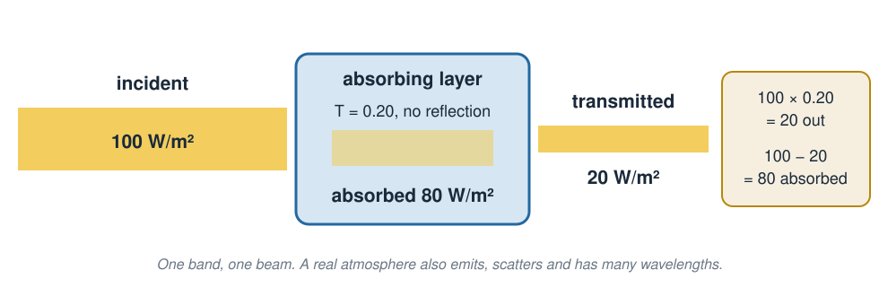
A constructed beam of 100 W/m² in one band meets a layer with T = 0.20 and no reflection: 20 W/m² pass and 80 W/m² are absorbed. This is a single-band calculation, not Earth’s energy balance, which needs all wavelengths, emission and atmospheric structure.
Check yourself
- Why does O₂, the second most abundant gas, contribute almost nothing to infrared absorption?
- CO₂ is a symmetric molecule. Why can it still absorb infrared?
- In the teaching spectrum, the gas absorbs 80% at 10 µm and 5% at 0.55 µm. Does it absorb more energy at 10 µm?
- A 50 W/m² beam meets a layer with T = 0.60 and no reflection. How much is absorbed?
How long does a gas stay?
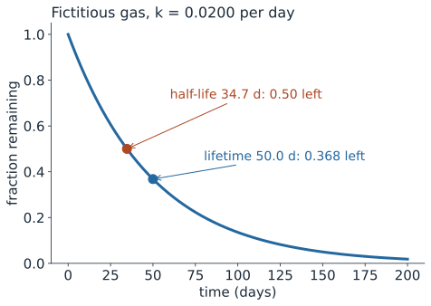
For a single first-order sink with rate constant k:
- amount left: C = C_0e^{-kt}
- lifetime τ = 1/k (37% left)
- half-life = ln 2 / k = 0.693 τ
Worked example, fictitious gas with k = 0.0200 per day:
- lifetime 50.0 days
- half-life 34.7 days
- left after 50.0 days: 0.368
CO₂ has no single lifetime
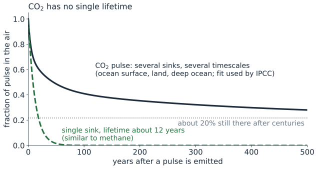
CO₂ is not destroyed in the air; it is redistributed to the ocean surface, plants and soils, and slowly the deep ocean. Each takes CO₂ at its own pace. A model fit used by the IPCC leaves about 20% of a pulse in the air after centuries. A gas like methane, destroyed by OH, behaves more like one exponential of about a decade.
Watching the build-up
 Mauna Loa Observatory, Hawaii, among old lava flows. Photo: Brian Vasel/NOAA, public domain, Wikimedia Commons.
Mauna Loa Observatory, Hawaii, among old lava flows. Photo: Brian Vasel/NOAA, public domain, Wikimedia Commons.
Since 1958, CO₂ has been measured continuously at Mauna Loa, far from local sources. The record, begun by Charles David Keeling, shows:
- a seasonal cycle: northern plants take up CO₂ in summer and release it in winter;
- a steady rise, from about 315 ppm in 1958 to above 420 ppm today. Before industrialisation it was about 280 ppm.
Because CO₂ is long-lived, it is well mixed: one remote station tracks the global trend.
Equal mass is not equal effect
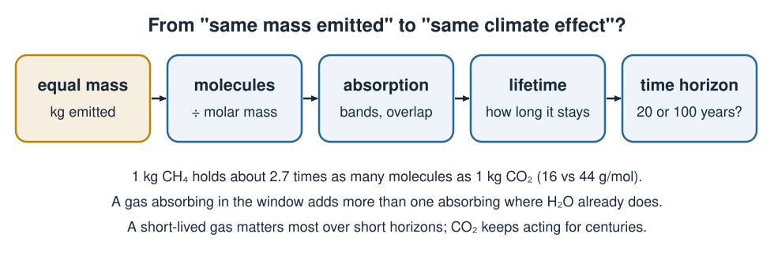
Two gases are emitted in equal mass. To compare their climate effects you need: the number of molecules (molar mass), their absorption bands and overlap, how long they stay, any chemical or particle side effects, and the time horizon of the comparison.
Particles: not just another gas
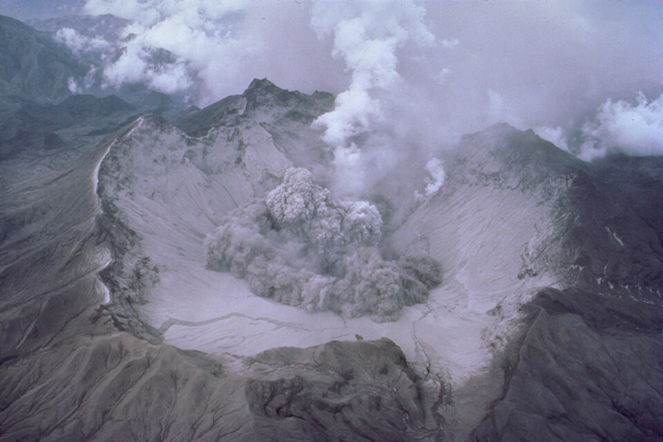
Summit caldera of Mount Pinatubo, Philippines, on 1 August 1991, six weeks after the climactic eruption of 15 June. Photo: T. J. Casadevall, USGS, public domain, Wikimedia Commons.In June 1991 Mount Pinatubo sent millions of tonnes of SO₂ into the stratosphere. It was oxidised to sulfate particles, the same chemistry as in the deposition lecture.
The particle veil scattered sunlight back to space, and global average temperature fell by roughly half a degree for about a year or two. Then the particles settled out.
Particles act through size, composition and location, not through infrared absorption bands, and they last days to a few years, not centuries.
Three ways particles change radiation
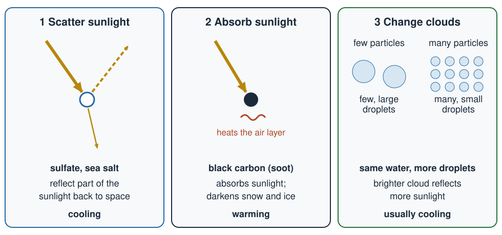
Bright particles such as sulfate scatter sunlight: cooling. Dark black carbon absorbs it: warming of the air layer and of snow it lands on. Particles also seed cloud droplets; more particles give more, smaller droplets and a brighter cloud.
Seeing the cloud effect from space
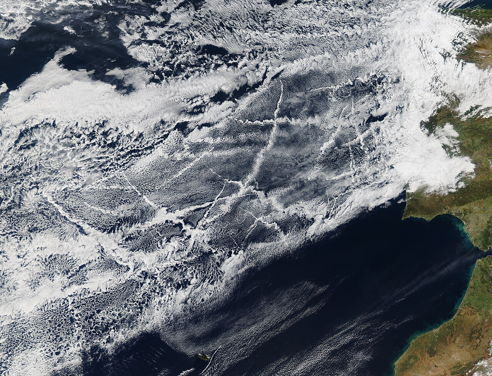
Ship tracks in low clouds over the North Atlantic off Spain and Portugal, 22 January 2018. Image: Jeff Schmaltz, NASA MODIS, public domain, Wikimedia Commons.The bright lines are ship tracks. Exhaust particles from ships seed extra cloud droplets, so the cloud along each ship’s path becomes brighter than the cloud around it.
The ship emits SO₂ and soot; the chemistry turns gases into particles, and the particles change the clouds.
Since 2020, international rules have cut the sulfur content of ship fuel sharply, and ship tracks have become less frequent. A cleaner-air policy can therefore slightly reduce a cooling effect.
Back to Arrhenius’s question
Svante Arrhenius. Public domain, Wikimedia Commons.
How can a few hundredths of a percent of CO₂ change the climate? Now we can answer with molecules:
- N₂ and O₂ have no changing dipole; they are transparent to Earth’s infrared.
- CO₂ bends and absorbs near 15 µm, close to the peak of Earth’s emission.
- Absorption makes energy escape from higher, colder layers.
- CO₂ is not destroyed; a large fraction stays for centuries.
Particles and short-lived gases add effects of both signs, on shorter timescales.
Common mistakes to avoid
- “CO₂ is symmetric, so it cannot absorb infrared.” Its bend and asymmetric stretch change the dipole.
- “The most abundant gases matter most.” N₂ and O₂ are almost inactive in the infrared.
- “A bigger absorption peak means a bigger climate effect.” Overlap, altitude, incident energy and lifetime also matter.
- “Absorbed fraction = absorbed energy.” Multiply by the incident power in each band.
- “CO₂ has a lifetime of X years.” It has several timescales; part stays for centuries.
- “Aerosols always cool.” Black carbon warms; effects depend on composition and location.
- “Equal mass, equal effect.” Molecules, bands, lifetime and time horizon differ.
Summary
| Concept | Key fact |
|---|---|
| Two kinds of light | Sun about 5800 K, peak near 0.5 µm; Earth about 288 K, peak near 10 µm |
| Greenhouse effect | gases absorb and re-emit infrared; escape from higher, colder layers |
| Dipole rule | IR-active vibration changes the dipole; N₂, O₂ inactive |
| CO₂ modes | bend near 15 µm, asymmetric stretch near 4.3 µm; symmetric stretch inactive |
| Bands | overlap with H₂O and the 8–13 µm window decide added effect |
| Transmission | absorbed fraction = 1 − T; energy needs incident power |
| Lifetime | τ = 1/k, half-life = 0.693 τ, for one first-order sink |
| CO₂ | several timescales; about 20% of a pulse stays for centuries |
| Particles | scatter (cool), absorb (warm), brighten clouds; short-lived |
Next: aquatic composition and equilibrium, the start of week 2: from air to water. Then the exercises and notes.
Dalälven river at Forsbo, Möklinta, Sweden. Photo: Q1959, CC BY-SA 4.0, Wikimedia Commons.